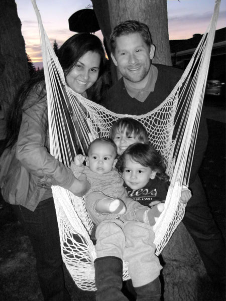

Hola, gracias por pasar para aprender más sobre mí. Mi nombre es Michael, y soy estudiante de posgrado gañando mi MS en Terapia Familiar de Loma Linda University. Me encanta aprender sobre famílias y estudiar las teorías que tratan de dar sentido a por qué las familias hacen lo que hacen. Mi proyecto, familytherapia.com, es una página web al estilo Wikipedia donde he tratado organizar estos conceptos y teorías de la familia en una manera que sea más fácil para que cualquiera pueda aprender.
Me encantan también idiomas y traducción. Actualmente hablo inglés (obviamente) y portugués fluentemente y español también, aunque está por detrás de los otros dos un poco. Soy traductor freelance entre inglés y portugués desde 2005. En caso de que esté interesado en traducir entre estos dos idiomas, se puede echar un vistazo a la parte de traducción. Además, si necesita una traducción realizada dentro de mi área de especialidad, no dude en enviarme un correo electrónico para recebir una cotización.
He tratado de diseñar el sitio para que usted pueda tener fácil acceso a todos los lugares en que se pueda encontrarme en línea, como Facebook y LinkedIn. También he incluido algunos de los proyectos que estoy haciendo actualmente (y lentamente), como se mencionó anteriormente familytherapia.com y albrightfamily.org, que se dedica a la historia de mi propria familia.
Con suerte, se encuentra este sitio útil para los fines que usted esperaba lograr cuando lo ha visitado. Si usted está interesado en aprender más acerca de mí, puede hacerlo aquí. Por favor, póngase en contacto conmigo si tiene cualquier pregunta o sugestión sobre mí o de lo que hago. Gracias otra vez por visitar.